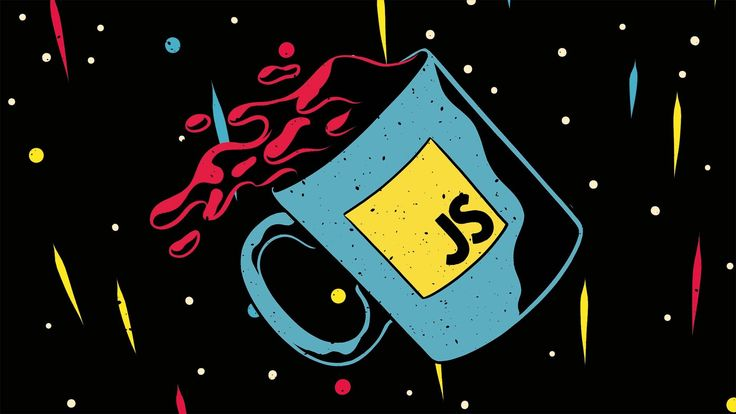
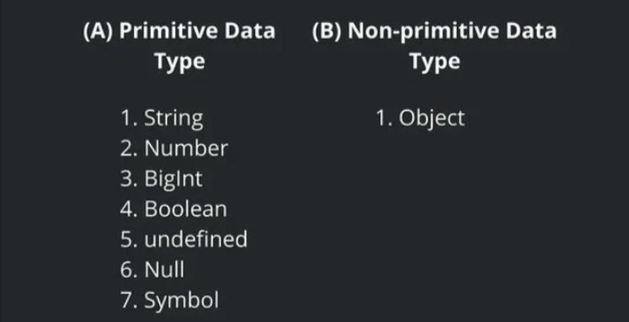
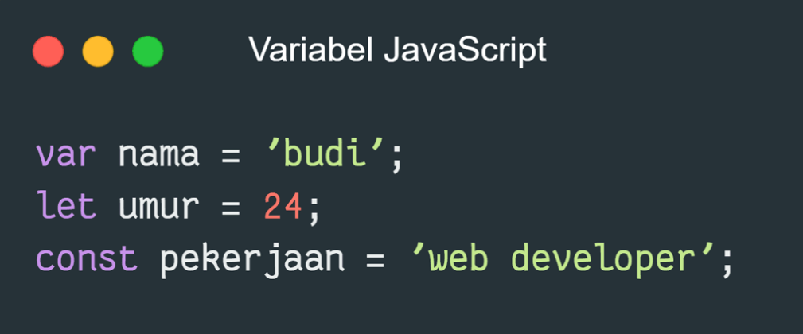
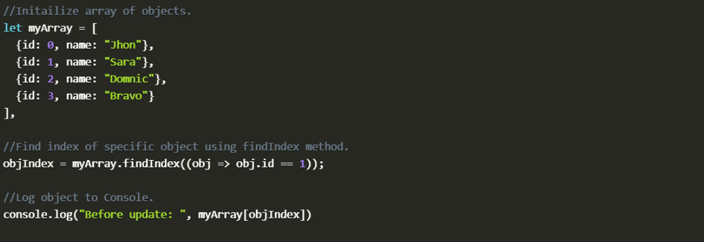
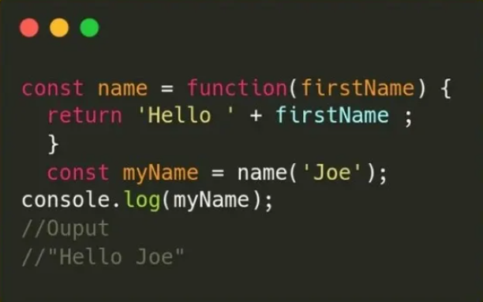
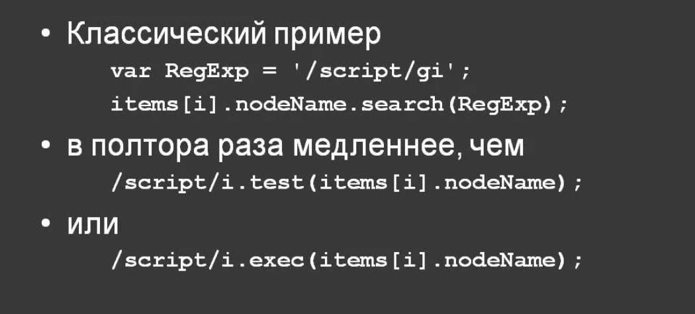

Руководство по языку
программирования JavaScript
Сегодняшний мир веб-сайтов трудно представить без языка
JavaScript. JavaScript - это то, что делает живыми веб-страницы,
которые мы каждый день просматриваем в своем веб-браузере.

JavaScript - это язык программирования, используемый для создания динамического контента на веб-сайтах. Это легкий, кроссплатформенный, и однопоточный язык программирования. JavaScript - это интерпретируемый язык, который выполняет код построчно, обеспечивая большую гибкость.

JavaScript был создан в 1995 году в компании Netscape разработчиком Брендоном Айком (Brendon Eich) в качестве языка сценариев в браузере Netscape Navigator 2. Первоначально язык назывался LiveScript, но на волне популярности в тот момент другого языка Java LiveScript был переименован в JavaScript. Однако данный момент до сих пор иногда приводит к некоторой путанице: некоторые начинающие разработчики считают, что Java и JavaScript чуть ли не один и тот же язык. Нет, это абсолютно два разных языка, и они связаны только по названию.
Каждое значение в программе JavaScript связано с типом данных. Тип данных определяет тип данных Number, String, Boolean, Double и т.д. Каждый тип данных требует разного объема памяти и имеет некоторые специфические операции, которые могут выполняться над ним. Типы данных в JavaScript можно разделить на два типа.
Примитивный тип данных
Предопределенные типы данных, предоставляемые языком JavaScript, известны как примитивные типы данных. Примитивные типы данных также известны как встроенные типы данных.
Непримитивные типы данных
Типы данных, производные от примитивных типов данных, известны как непримитивные типы данных. Они также известны как производные типы данных или ссылочные типы данных.

Переменные используются для хранения данных в JavaScript, чтобы мы могли позже получить к ним доступ. JavaScript это язык с динамической типизацией, поэтому тип переменных определяется во время выполнения. Следовательно, нет необходимости явно определять тип переменной. Мы можем объявлять переменные в JavaScript тремя способами:
Ключевое слово JS var
Ключевое слово JS let
Ключевое слово JS const

Массив в JavaScript — это структура, в которой можно хранить коллекции элементов — чисел, строк, других массивов и так далее. Элементы нумеруются и хранятся в том порядке, в котором их поместили в массив.
Создать массив можно с помощью квадратных скобок. []1 Например, можно создать пустой массив:
const guestList = [].
А можно создать сразу с элементами внутри:
const theGirlList = [ 'Серсея', 'Илин Пейн', 'Меррин Трант', 'Дансен', 'Гора'].

Функция в JavaScript - это повторно используемый блок кода, который выполняет определенную задачу. Вы определяете ее один раз, а затем можете запускать (или “вызывать”) ее всякий раз, когда вам нужно выполнить эту задачу в вашей программе.

Регулярное выражение - это специальная последовательность символов, которая определяет шаблон поиска, обычно используемый для сопоставления с шаблоном в тексте. Он часто используется для таких задач, как проверка адресов электронной почты, номеров телефонов или проверка того, содержит ли строка определенные шаблоны (например, даты, определенные слова и т.д.).

Что такое JavaScript?
JavaScript - самый мощный и универсальный язык веб-программирования. Он используется для придания веб-сайтам интерактивности. JavaScript помогает нам добавлять на веб-страницы такие функции, как анимация, интерактивные формы и динамический контент.
Какие версии JS рассматриваются в этом пособии?
Это Учебное пособие по JS охватывает широкий спектр версий JavaScript, от основ до более продвинутых концепций. Оно включает в себя обе старые версии, такие как ES5 и ES6, а также более поздние версии и функции, представленные в ES7, ES8, ES9 и более поздних версиях.
Для чего используется JavaScript?
JavaScript в основном используется для улучшения веб-страниц за счет добавления интерактивности, динамического контента и удобных для пользователя функций. Он запускается непосредственно в веб-браузерах и позволяет разработчикам создавать отзывчивые и привлекательные пользовательские интерфейсы.
Что такое фреймворки JavaScript?
Фреймворки JavaScript (такие как Angular или Vue.js) предоставляют структурированный способ создания веб-приложений. Они предлагают готовые компоненты, маршрутизацию, управление состоянием и другие инструменты для оптимизации разработки.